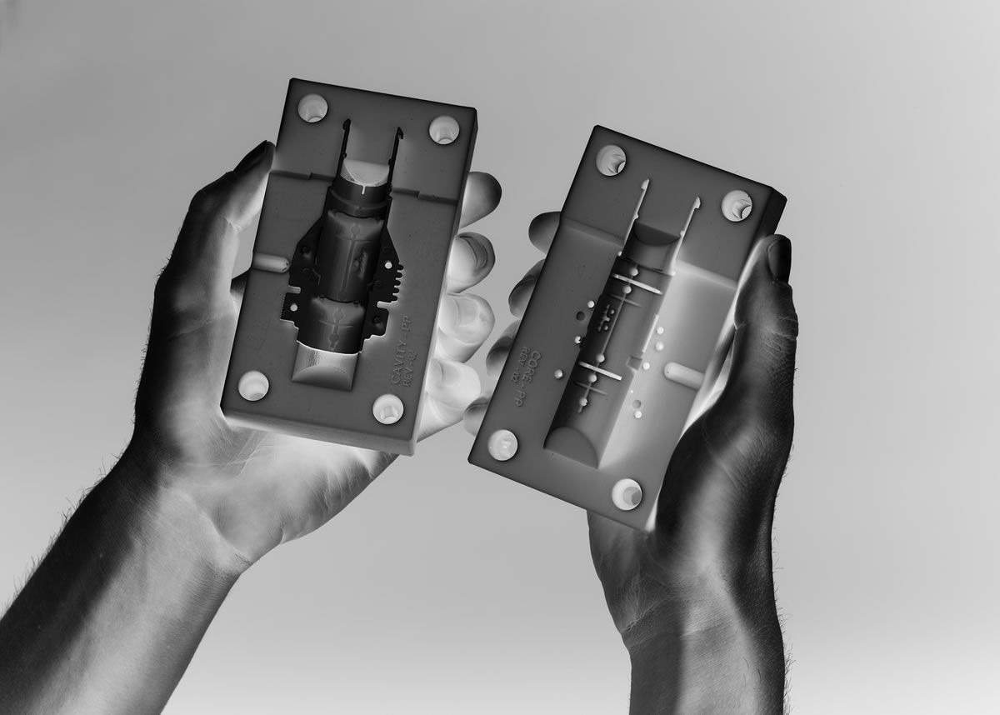

/moulding_&_casting
(29_march_2022)
For this 9th week of FabAcademy, the topic was moulding and casting. Even though this is a less
used way of prototyping, it's extremely useful and gives really accurate results and the capability
of being able to produce one object faster and cheaper than using other technologies.
During the session, we were told about the story of moulding since it is a technique that has been
used since many centuries ago and how it has evolved over the years. We talked about 1 side and 2
side moulds, positive-negative shapes and then we were introduced to the different processes of
mould design and machining.

The main thing to take into consideration when designing a part for a mould is that one needs to
know if the part can be done only with one mould or if it has to be split in half. This is due to
the shape of the design and if it has unreachable angles that could get stuck when creating the
mould. For the designs that require a two parts mould, the alignment of both sides is extremely
important to get a correctly shaped object.
There are many processes and materials to create moulds, from wax to latex and silicone, each one
with specific characteristics. For example, wax needs to be milled and it's usually used to create
the positive of the part while silicon needs to be poured into the positive of the shape and then
dried to create the negative of it.
There are many applications of moulding and casting and I want to explore those ones that can
involve electronics and that can be combined with other devices and sensors. This is going to be
one of my goals for the next steps of my project.
.amphitheatre_ashtray
This week's task consisted of making a mould (either one or two-sided) that involved a hard-soft-hard process. For example, 3D printing or milling the positive, creating the negative with silicone, then using some other material to pour it into the silicone mould and get the final object.
In my case, I already made this during the Remixing Materials course, when I designed an ashtray that I 3D printed and made a silicone mould out of it. Later, I used the mould to try and use new materials to create the final ashtray. You can see the whole process here.